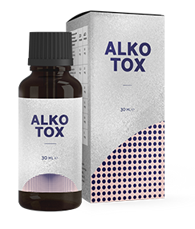
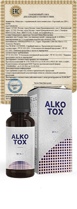

Alkotox -
Mond «Nu» alcoolismului
Mond «Nu» alcoolismului

990 РУБ.
preț vechi
1980 РУБ.
Alkotox – un nou produs eficient pentru combaterea dependenței de alcool
- Reduce pofta de alcool
- Calmează sistemul nervos
- Îmbunătățește starea psihică
- Are un efect benefic asupra ficatului
- Elimină toxinele din organism
>Alkotox – un produs eficient, care elimină toxinele din organism și reduce pofta de alcool. Extract de cimbru și rădăcina de lemn dulce din compoziția prosului Alkotox elimină toxinele din organism după consumul de băuturi alcoolice și au un efect de restaurare asupra organismului.
Alkotox
complex de componente extrem de active
complex de componente extrem de active
Extract de cimbru
contribuie la eliminarea toxinelor și normalizarea tractului gastro-intestinal
Rădăcina de lemn dulce
Îmbunătățește echilibrul de apă și sare, aduce la normal funcția rinichilor. Asigură eliminarea rapidă a toxinelor și alcoolului din organism. Întărește imunitatea generală a organismului.
Extract de armurariu
calmează sistemul nervos, ajută la ameliorarea intoxicației cu alcool
Extract din rădăcină de Kudzu
diminui o efeito tóxico de álcool, elimina ressaca, melhora o funcionamento do coração
Extract de mentă
contribuie la ameliorarea stării psihice, reduce pofta de alcool
Alkotox
testat
practic
În anul 2014 a fost efectuat un studiu în care 1000 de voluntari, care suferă de alcoolism, timp de o lună au luat câte 2 porții de băutură.
Conform rezultatelor studiului 75% din aceștia au marcat reducerea poftei de alcool și ameliorarea stării organismului, iar 25% au renunțat totalmente la alcool. În urma examenului medical s-a constatat o ameliorare vizibilă a parametrilor hepatici, a stării de sănătate a sistemului cardio-vascular și a sistemului nervos.
Băutura și-a demonstrat eficacitatea la toți cei 100% de voluntari, indiferent de severitatea bolii și durata consumului de alcool.

reducere
-50% 990 руб. preț vechi 1980 РУБ.
-50% 990 руб. preț vechi 1980 РУБ.
a rămas până la sfârșitul promoției